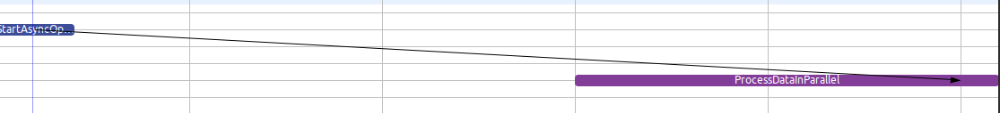

Encouraging Git Signing to Prevent User Impersonations
Ensures authenticity of commits and tags, prevents malicious identity abuse.
Gerrit supports enforcing signed pushes via hooks and project config.
GitHub marks verified commits with a green checkmark when signed with a trusted key.

GitLab provides commit verification and push rules for enforcing signing policies.
$ git config --global user.signingkey YOUR_KEY_ID
$ git config --global commit.gpgsign true
$ gpg --full-generate-key
$ gpg --list-secret-keys --keyid-format=long
$ git config --global user.signingkey 3AA5C34371567BD2
#!/bin/bash
# verify-git-signatures.sh
if git log --show-signature | grep 'Good signature'; then
echo "All commits verified."
else
echo "Unverified commits found!"; exit 1
fi
Git signing is a simple yet powerful step to protect your codebase from impersonations.
[receive]
requireSignedCommits = true
jobs:
verify-commits:
runs-on: ubuntu-latest
steps:
- uses: actions/checkout@v2
- run: ./verify-git-signatures.sh
Enable 'Reject unsigned commits' in repository push rules.